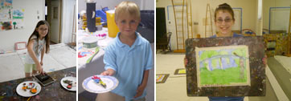

Art Classes
Children's Classes / Adult Classes
April school vacation week fun!

Build a Kaleidoscope Workshop
Wednesday, April 20 (10:30-12 or 1:30-3)
Registration is required: $10 members/ $12 non-members
Children will explore the qualities of light, shape and color as they design and paint their own kaleidoscopes. This workshop will also include a colored-themed gallery eye-spy tour. Class is designed for children ages 6-10.
Coral Reef Collage Workshop
Thursday, April 21 (10:30-12 or 1:30-3)
Registration is required: $10 members/ $12 non-members
After an animal-themed eye-spy in the galleries, participants will use pastels, watercolor paints, and other mixed media supplies to explore the effects of light and shadow as their create their own undersea masterpiece. Class is designed for children ages 6-10.
Suncatcher Workshop
Friday, April 22 (10:30-12 or 1:30-3)
Registration is required: $10 members/ $12 non-members
After a hide and seek tour of the galleries, participants will use glass stain to design and paint their own suncatcher. Then, using crystals, beads, and other glass objects, participants will weave light and color into their piece. Class is designed for children ages 6-10.
For reservations please contact Mollie Clarke, Director of Education at 860-443-2545 x110 or email.